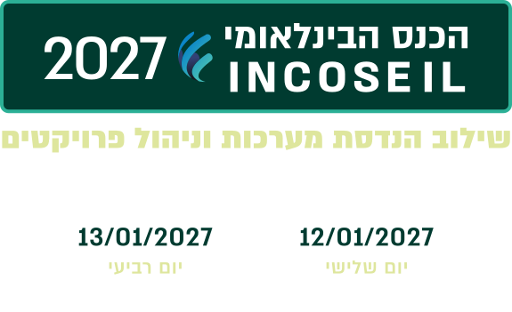
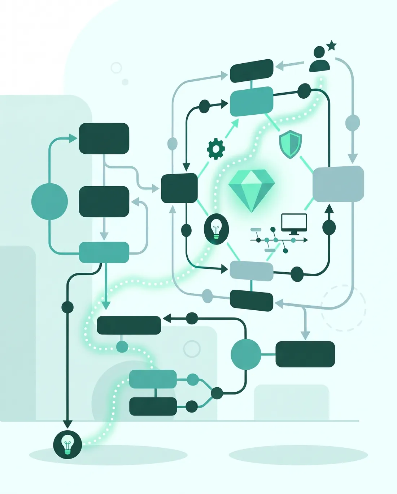
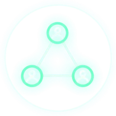
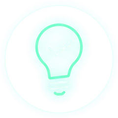
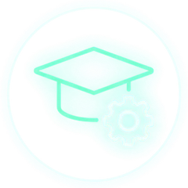
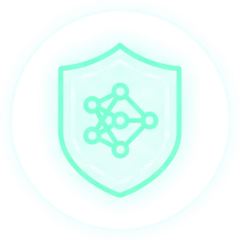
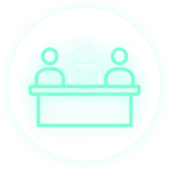
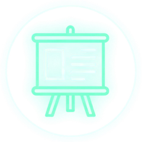

DATE


-
יום הכנס
מלון דניאל, הרצליה
תוכנית יום הכנס -
יום הסדנאות
סדנאות מקוונות
תוכנית יום הסדנאות
הכנס הבינלאומי
INCOSE IL 2027
הכנס הבינלאומי השנתי להנדסת מערכות של INCOSE-IL יתקיים ביום שלישי, 12 בינואר 2027, במלון דניאל בהרצליה. יום הסדנאות ייערך למחרת, ביום רביעי, 13 בינואר 2027, במתכונת מקוונת.
מערכות מורכבות לא נבנות לבד. הן מצליחות כשמהנדסי מערכות ומנהלי פרויקטים עובדים כצוות אחד עם המזמין, מהרגע שבו נולד הצורך המבצעי ועד שהערך מגיע ללקוח. זה בדיוק מה שנעשה בכנס: יום אחד שמפגיש את המובילים מהתעשייה, מהאקדמיה ומהממשלה לשיחה פתוחה על מה שעובד, מה שלא, ומה הלאה.
על מה נדבר
- מהיום הראשון: ייזום פרויקטים והממשק בין הלקוח, המזמין וצוות הפיתוח
- מהשטח: תובנות, לקחים ודפוסי הצלחה מפיתוח מערכות מורכבות
- שבבים ומיקרואלקטרוניקה: הנדסת מערכות בחזית הטכנולוגיה
- בינה מלאכותית: אימות, תיקוף וניסויים בעידן ה-AI
- משתמשי הקצה בתמונה: אתגרי הבשלה מערכתית בשילוב המשתמשים
- מושב אקדמי: המחקרים, השיטות והכלים המתקדמים בהנדסת מערכות
מה מחכה לכם
- 2 הרצאות מליאה של בכירים מהתעשייה הביטחונית והאזרחית
- 2 מסלולים מקבילים ולמעלה מ-20 מרצים
- פאנל מומחים: איך סוגרים את הפער בין המצוי לרצוי בפיתוח מערכות מורכבות?
- תצוגת פוסטרים: פרויקטי הגמר של סטודנטים לתואר שני, הדור הבא של מהנדסי המערכות
ולמחרת, יום הסדנאות: ביום רביעי נתכנס אונליין לסדנאות מקצועיות עם מומחים מהארץ ומהעולם, בהובלת ד"ר יניב מרדכי.
נתראה בכנס,

ד"ר משה שוקר
יו"ר יום הכנס
סמנכ"ל מו"פ רפאל

ד"ר יניב מרדכי
יו"ר יום הסדנאות
אוניברסיטת ת"א

נושאי הכנס המרכזיים

ייזום פרויקטים והממשק בין הלקוח, המזמין וצוות הפיתוח

תובנות, לקחים ודפוסי הצלחה מפיתוח מערכות מורכבות

שבבים ומיקרואלקטרוניקה

אתגרי הבשלה מערכתית בשילוב המשתמשים

המחקרים, השיטות והכלים המתקדמים בהנדסת מערכות

אימות, תיקוף וניסויים בעידן ה-AI

פאנל מומחים: איך סוגרים את הפער בין המצוי לרצוי בפיתוח מערכות מורכבות?

תצוגת פוסטרים: פרויקטי הגמר של סטודנטים לתואר שני, הדור הבא של מהנדסי המערכות